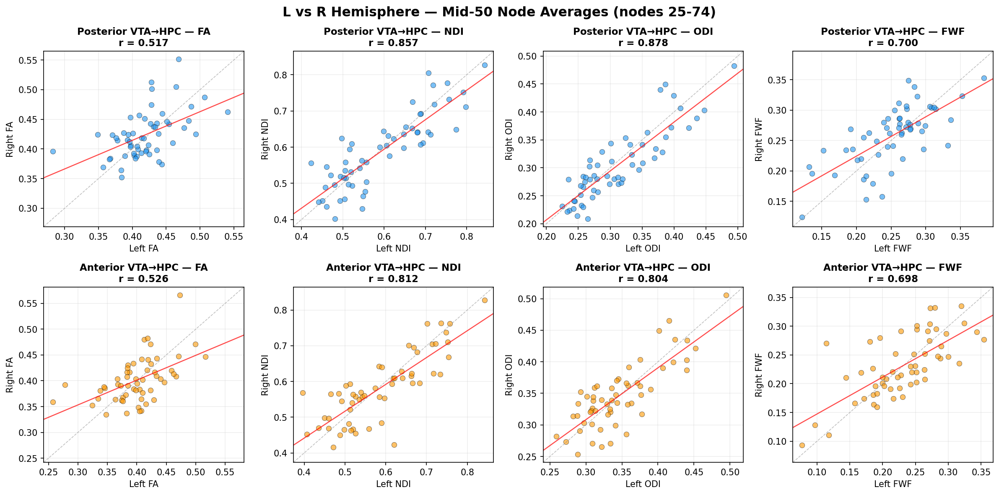

Memory was scored as accuracy (d′) and two positivity-bias scores, then tested node by node against each tract's microstructure.
Per condition (social faces, monetary doors): one accuracy score and two positivity-bias scores.
Hit rate = proportion of items she chose that she later calls "remember." False-alarm rate = proportion of non-chosen foils she calls "remember." d′ is high when hits are common and false alarms rare.
import pandas as pd, numpy as np, glob, json, os
from scipy.stats import norm, pearsonr
def z(p): return norm.ppf(np.clip(p,1e-6,1-1e-6))
base='/tmp/alltsv'
grp=pd.read_csv('/Users/dannyzweben/Desktop/SDN/DTI/Impact-Analyses/IMPACT_grouped_export.csv').drop_duplicates('ID')
ready=pd.read_csv('/Users/dannyzweben/Desktop/SDN/DTI/data.check/analysis_ready/r_vta_r_hipp__NDI__analysis.csv')
subs=set(ready['Subject'])
def recompute(subj,cond):
tag='social' if cond=='SOCIAL' else 'monetary'
dt='decision_social' if cond=='SOCIAL' else 'decision_monetary'
ef=[f for f in glob.glob(f'{base}/{subj}/*Encoding_{tag}*.tsv') if 'practice' not in f]
rf=glob.glob(f'{base}/{subj}/*Recall_{tag}*.tsv'); rf=[f for f in rf if 'practice' not in f]
if not ef or not rf: return None
enc=pd.read_csv(ef[0],sep='\t'); rec=pd.read_csv(rf[0],sep='\t')
edec=enc[enc['trial_type'].astype(str).str.startswith(f'decision_{tag}')].copy()
chosen,notchosen=set(),set()
for _,r in edec.iterrows():
if r.get('selection')=='right': chosen.add(r.get('image_right')); notchosen.add(r.get('image_left'))
elif r.get('selection')=='left': chosen.add(r.get('image_left')); notchosen.add(r.get('image_right'))
rdec=rec[rec['trial_type']==dt].copy(); rdec=rdec[rdec['selection']!='missed']
isrecall=rdec['selection'].astype(str).str.startswith('recall')
hit=((isrecall)&(rdec['image'].isin(chosen))).sum(); nold=rdec['image'].isin(chosen).sum()
fatot=((isrecall)&(rdec['image'].isin(notchosen))).sum(); nnew=rdec['image'].isin(notchosen).sum()
if nold<5 or nnew<5: return None
H=hit/nold; F=fatot/nnew
return z(H)-z(F)
rows=[]
for subj in sorted(subs):
row={'Subject':subj}
for cond in ['SOCIAL','MONETARY']:
mine=recompute(subj,cond)
rep=grp[grp['ID']==subj][f'{cond}_dprime']
row[f'{cond}_mine']=round(mine,4) if mine is not None else None
row[f'{cond}_reported']=round(float(rep.iloc[0]),4) if len(rep) and pd.notna(rep.iloc[0]) else None
rows.append(row)
df=pd.DataFrame(rows)
# correlations
res={}
for cond in ['SOCIAL','MONETARY']:
d=df[[f'{cond}_mine',f'{cond}_reported']].dropna()
r,p=pearsonr(d[f'{cond}_mine'],d[f'{cond}_reported'])
res[cond]={'r':round(r,4),'n':len(d)}
print("Recompute vs reported:",res)
# save sample rows for HTML (subjects with both)
df.to_json('/Users/dannyzweben/Desktop/SDN/DTI/SDN-IMPACT-DTI/results_html/dprime_recompute.json',orient='records')
# NOTE: does NOT write meta_data['data_quality']['dprime_recompute'] — build_demo_dq.py is the
# single source of truth for that value (analysis d′ vs export on the clean roster). This script's
# recompute↔export r can include DQ-excluded sessions and must not clobber the published value.
print("NOTE: meta_data recompute is owned by build_demo_dq.py; not overwriting here.")Recompute d′ straight from each mother's raw Encoding and Recall trials as a transparency check on the study's exported scores.
Matched the export: social r = 0.96, monetary r = 0.99.
""" Compliance screen — a PRE-ANALYSIS data-quality gate for the memory task. Flags "yes-to-everything" responders: mothers who pressed "remember" to ~all items (old AND new foils), so they never discriminated. Their d' is degenerate (hit rate = false-alarm rate) and their responses carry no memory signal — they must be excluded from every memory outcome BEFORE the tract analyses (catching this late forces re-runs). Rule: exclude a condition if the subject called >= 95% of items "remember" (equivalently, a false-alarm rate >= 0.95 — saying "remember" to nearly every new foil). Usage: python compliance_screen.py -> prints the screen + writes compliance_screen.csv """ import pandas as pd, numpy as np, glob, os TSV_ROOT = '/tmp/alltsv' # raw per-subject trial files ROSTER = '/Users/dannyzweben/Desktop/SDN/DTI/data.check/analysis_ready/r_vta_r_hipp__NDI__analysis.csv' OUT = '/Users/dannyzweben/Desktop/SDN/DTI/SDN-IMPACT-DTI/data/compliance_screen.csv' THRESH = 0.95 def screen(subj, cond): tag = 'social' if cond == 'SOCIAL' else 'monetary' ef = [f for f in glob.glob(f'{TSV_ROOT}/{subj}/*Encoding_{tag}*.tsv') if 'practice' not in f] rf = [f for f in glob.glob(f'{TSV_ROOT}/{subj}/*Recall_{tag}*.tsv') if 'practice' not in f] if not ef or not rf: return None enc = pd.read_csv(ef[0], sep='\t'); rec = pd.read_csv(rf[0], sep='\t') edec = enc[enc['trial_type'].astype(str).str.startswith(f'decision_{tag}')] chosen, notchosen = set(), set() for _, r in edec.iterrows(): if r.get('selection') == 'right': chosen.add(r.get('image_right')); notchosen.add(r.get('image_left')) elif r.get('selection') == 'left': chosen.add(r.get('image_left')); notchosen.add(r.get('image_right')) rdec = rec[rec['trial_type'].astype(str).str.startswith(f'decision_{tag}')] rdec = rdec[~rdec['selection'].astype(str).str.contains('missed|MISSED', case=False, na=False)] if len(rdec) == 0: return None isrecall = rdec['selection'].astype(str).str.startswith('recall') # "I remember this" new = rdec['image'].isin(notchosen) return dict(remember_rate=round(isrecall.mean(), 3), fa_rate=round((isrecall & new).sum() / max(new.sum(), 1), 3)) def main(): roster = pd.read_csv(ROSTER)['Subject'].tolist() rows = [] for s in roster: for cond in ['SOCIAL', 'MONETARY']: r = screen(s, cond) if r: rows.append(dict(Subject=s, condition=cond, **r, non_compliant=bool(r['remember_rate'] >= THRESH))) df = pd.DataFrame(rows) os.makedirs(os.path.dirname(OUT), exist_ok=True) df.to_csv(OUT, index=False) flagged = df[df['non_compliant']] print(f"Compliance screen (threshold: remember-rate >= {THRESH:.0%}):") print(f" {df['Subject'].nunique()} mothers screened across both conditions.") print(f" NON-COMPLIANT (excluded from that condition's memory outcomes):") if flagged.empty: print(" none") for r in flagged.itertuples(): print(f" {r.Subject} [{r.condition}]: remember-rate={r.remember_rate:.0%} false-alarm-rate={r.fa_rate:.0%}") print(f" -> wrote {OUT}") if __name__ == '__main__': main()
Pre-analysis gate: flag yes-to-everything responders (remember-rate ≥ 0.95), whose d′ is degenerate, and drop that condition.
Excludes s4210 from every memory outcome.
Totalpos and Totalneg are the number of positive and negative items at test (the ones she chose plus the foils), so each memory count is a fraction of its valence's items — hits over positive items, false alarms over positive items, and the same for negative. A positive score means more positive than negative.
""" Positivity-bias scores (HitRateBias, FABias) from the study's valence-coded counts, with the zero-valence rule, written into the analysis-ready CSVs. Two scores per condition: HitRateBias = TrueMem_pos/Total_pos - TrueMem_neg/Total_neg (bias in CORRECT memories) FABias = FalseMem_pos/Total_pos - FalseMem_neg/Total_neg (bias in FALSE memories) Zero-valence rule: a term whose denominator is 0 is set to 0 (the subject produced zero memories of that valence, so that rate is 0 — not undefined). This gives a DEFINED, maximal score to valid mothers who never used one valence (e.g. never judged a face a "loss" = maximally positive), instead of dropping them. It changes only zero-valence subjects; every other score is identical to the plain difference. Non-compliant mothers (see compliance_screen.py) are already NaN in d' and stay excluded here — this rule never rescues a "yes-to-everything" responder, because compliance is screened first. Validity: a bias score is kept exactly where that condition's d' is valid (same DQ gates), and NaN otherwise. Run AFTER d' + compliance exclusions are applied to analysis_ready. """ import pandas as pd, numpy as np, glob GRP = '/Users/dannyzweben/Desktop/SDN/DTI/Impact-Analyses/IMPACT_grouped_export.csv' AR = '/Users/dannyzweben/Desktop/SDN/DTI/data.check/analysis_ready' def rate(numer, denom): n = pd.to_numeric(numer, errors='coerce'); d = pd.to_numeric(denom, errors='coerce') return np.where(d > 0, n / d.replace(0, np.nan), 0.0) # zero-valence rule: 0/0 -> 0 def bias_table(): g = pd.read_csv(GRP).rename(columns={'ID': 'Subject'}).drop_duplicates('Subject') out = g[['Subject']].copy() for c in ['SOCIAL', 'MONETARY']: out[f'{c}_HitRateBias'] = rate(g[f'{c}_TrueMem_positive'], g[f'{c}_Total_pos']) - rate(g[f'{c}_TrueMem_negative'], g[f'{c}_Total_neg']) out[f'{c}_FABias'] = rate(g[f'{c}_FalseMem_positive'], g[f'{c}_Total_pos']) - rate(g[f'{c}_FalseMem_negative'], g[f'{c}_Total_neg']) return out def main(): b = bias_table() biascols = [c for c in b.columns if c != 'Subject'] dcol = {'SOCIAL_HitRateBias': 'SOCIAL_dprime', 'SOCIAL_FABias': 'SOCIAL_dprime', 'MONETARY_HitRateBias': 'MONETARY_dprime', 'MONETARY_FABias': 'MONETARY_dprime'} for f in glob.glob(f'{AR}/*__analysis.csv'): df = pd.read_csv(f) merged = df[['Subject']].merge(b, on='Subject', how='left') for bc in biascols: valid = pd.to_numeric(df[dcol[bc]], errors='coerce').notna() # bias valid where d' is valid df[bc] = np.where(valid.values, merged[bc].values, np.nan) df.to_csv(f, index=False) # report Ns on the reference file ref = pd.read_csv(f'{AR}/r_vta_r_hipp__NDI__analysis.csv') print("Bias scores written (zero-valence rule; valid where d' is valid). Per-outcome N:") for bc in ['SOCIAL_FABias', 'SOCIAL_HitRateBias', 'MONETARY_FABias', 'MONETARY_HitRateBias']: print(f" {bc:22s} N={pd.to_numeric(ref[bc], errors='coerce').notna().sum()}") if __name__ == '__main__': main()
Build HitRateBias and FABias from the valence-coded counts, with the zero-valence rule.
The two bias scores per condition, written into the analysis tables.
| Condition | mean d′ | t vs 0 | p |
|---|---|---|---|
| Social | +0.098 | 2.47 | 0.017 |
| Monetary | +0.215 | 4.77 | <0.001 |
Both above chance. Social and monetary d′ are uncorrelated (r = -0.15, p = 0.29): distinct abilities.
| Component | Social | Monetary | differ? |
|---|---|---|---|
| Hit rate | 0.560 | 0.539 | no (p=.40) |
| False-alarm rate | 0.527 | 0.460 | yes (p=.008) |
| d′ (accuracy) | 0.10 ± .29 | 0.22 ± .33 | no (p=.07) |
| HitRateBias (correct-memory positivity) | +0.12 ± .19 | +0.12 ± .16 | no (p=.92) |
| FABias (false-memory positivity) | +0.07 ± .19 | +0.08 ± .16 | no (p=.82) |
Paired t-tests, n = 52. The only difference between domains is the false-alarm rate: the social task produces more false alarms. Hit rate, d′, and both positivity biases are equivalent, so the lower social d′ is more false positives, not weaker memory, and the social signal lives specifically in false memories.
""" d' component breakdown: split each mother's d' into hit rate (memory strength) and false-alarm rate (false positives), then paired-compare social vs monetary. Applies the SAME data-quality gates as the analysis: exclude corrupted (<80% recall/encode overlap), heavily-missed (>1/3 trials), and non-compliant (>=95% "remember" = yes-to-everything). Writes dprime_breakdown.json for the data-quality page. """ import pandas as pd, numpy as np, glob, json from scipy.stats import norm, ttest_rel TSV = '/tmp/alltsv' ROSTER = '/Users/dannyzweben/Desktop/SDN/DTI/data.check/analysis_ready/r_vta_r_hipp__NDI__analysis.csv' OUT = '/Users/dannyzweben/Desktop/SDN/DTI/SDN-IMPACT-DTI/results_html/dprime_breakdown.json' def z(p): return norm.ppf(np.clip(p, 1e-6, 1 - 1e-6)) def comp(subj, cond): tag = 'social' if cond == 'SOCIAL' else 'monetary' ef = [f for f in glob.glob(f'{TSV}/{subj}/*Encoding_{tag}*.tsv') if 'practice' not in f] rf = [f for f in glob.glob(f'{TSV}/{subj}/*Recall_{tag}*.tsv') if 'practice' not in f] if not ef or not rf: return None enc = pd.read_csv(ef[0], sep='\t'); rec = pd.read_csv(rf[0], sep='\t') edec = enc[enc['trial_type'].astype(str).str.startswith(f'decision_{tag}')] chosen, notchosen = set(), set() for _, r in edec.iterrows(): if r.get('selection') == 'right': chosen.add(r.get('image_right')); notchosen.add(r.get('image_left')) elif r.get('selection') == 'left': chosen.add(r.get('image_left')); notchosen.add(r.get('image_right')) allrec = rec[rec['trial_type'].astype(str).str.startswith(f'decision_{tag}')] miss = allrec['selection'].astype(str).str.contains('missed|MISSED', case=False, na=False) rdec = allrec[~miss] rec_imgs = set(rdec['image'].dropna()); overlap = 100 * len(rec_imgs & (chosen | notchosen)) / max(len(rec_imgs), 1) pctmiss = 100 * miss.sum() / max(len(allrec), 1) isr = rdec['selection'].astype(str).str.startswith('recall') if overlap < 80 or pctmiss > 33 or isr.mean() >= 0.95: return None # DQ + compliance gates hit = (isr & rdec['image'].isin(chosen)).sum(); nold = rdec['image'].isin(chosen).sum() fa = (isr & rdec['image'].isin(notchosen)).sum(); nnew = rdec['image'].isin(notchosen).sum() if nold < 5 or nnew < 5: return None return dict(H=hit / nold, F=fa / nnew, dp=z(hit / nold) - z(fa / nnew)) def main(): roster = pd.read_csv(ROSTER)['Subject'].tolist() rows = {} for s in roster: for cond in ['SOCIAL', 'MONETARY']: c = comp(s, cond) if c: rows.setdefault(s, {}).update({f'{cond}_H': c['H'], f'{cond}_F': c['F'], f'{cond}_dp': c['dp']}) df = pd.DataFrame(rows.values()) both = df.dropna(subset=['SOCIAL_H', 'MONETARY_H']) def cell(scol, mcol): s, m = both[scol], both[mcol]; t, p = ttest_rel(s, m) return dict(social=round(s.mean(), 3), monetary=round(m.mean(), 3), diff=round(s.mean() - m.mean(), 3), t=round(t, 2), p=round(p, 4)) bd = {'n': len(both), 'hit': cell('SOCIAL_H', 'MONETARY_H'), 'fa': cell('SOCIAL_F', 'MONETARY_F'), 'dprime': cell('SOCIAL_dp', 'MONETARY_dp')} json.dump(bd, open(OUT, 'w'), indent=1) print(f"dprime_breakdown.json (n={bd['n']}): hit p={bd['hit']['p']} fa p={bd['fa']['p']}") if __name__ == '__main__': main()
Split each d′ into hit rate and false-alarm rate, paired social vs. monetary, under the same data-quality and compliance gates.
The hit / false-alarm breakdown above.
Six outcomes (social and monetary × d′, HitRateBias, FABias) tested against each tract's along-node microstructure, for all four metrics, plus the hippocampus region.
At each of the 100 nodes, the outcome on that node's microstructure value plus five covariates: ICV, tract streamline count and mean length, head motion, and maternal age.
#!/usr/bin/env python3 """ ================================================================================ Step 28-prep: Build analysis-ready CSVs for permutation testing ================================================================================ Merges everything Ranesh's permutation R script needs: - Subject ID - 5 outcomes: * SOCIAL_dprime, MONETARY_dprime (memory) * ctqsf_adult_totalmaltreatment_pnrscoring (trauma — total) * ctqsf_adult_totalabuse_pnrscoring (trauma — abuse) * ctqsf_adult_totalneglect_pnrscoring (trauma — neglect) - 5 covariates: * mot_abs (absolute head motion, eddy quad) * ICV_mm3 * <tract>_count (streamline count) * <tract>_mean_length * demo_poc_51 (maternal age) - 100 wide metric columns (FA_0..FA_99 OR NDI_0..NDI_99 etc.) Output: 16 CSVs (4 tracts × 4 metrics) in ~/Desktop/SDN/DTI/data.check/analysis_ready/ Each named: <tract>__<metric>__analysis.csv """ import pandas as pd from pathlib import Path base = Path("/Users/dannyzweben/Desktop/SDN/DTI") fa_dir = base / "data.check/step27_fa" nd_dir = base / "data.check/step30_noddi" out_dir = base / "data.check/analysis_ready" out_dir.mkdir(exist_ok=True, parents=True) red = pd.read_csv(base / "Impact-Analyses/IMPACT_REDCap_clean_093024.csv") grp = pd.read_csv(base / "Impact-Analyses/IMPACT_grouped_export.csv") cov = pd.read_csv(base / "Impact-Analyses/imaging_covariates.csv") # Outcomes TRAUMA_COLS = [ "ctqsf_adult_totalmaltreatment_pnrscoring", "ctqsf_adult_totalabuse_pnrscoring", "ctqsf_adult_totalneglect_pnrscoring", ] MEM_COLS = ["SOCIAL_dprime", "MONETARY_dprime"] # Memory-rate outcomes derived from raw counts # True memory rate = TrueMem / TotalTrials # False memory rate = FalseMem / (TrueMem + FalseMem) RAW_MEM_COLS = [ "SOCIAL_TrueMem", "SOCIAL_FalseMem", "SOCIAL_TotalTrials", "MONETARY_TrueMem", "MONETARY_FalseMem", "MONETARY_TotalTrials", ] DERIVED_MEM_COLS = [ "SOCIAL_TrueMemRate", "SOCIAL_FalseMemRate", "MONETARY_TrueMemRate", "MONETARY_FalseMemRate", ] # Positivity memory-bias outcomes — valence-broken-down counts # HitRateBias = P(hit | positive item) - P(hit | negative item) # FABias = P(FA | positive item) - P(FA | negative item) RAW_BIAS_COLS = [ "SOCIAL_TrueMem_positive", "SOCIAL_TrueMem_negative", "SOCIAL_FalseMem_positive", "SOCIAL_FalseMem_negative", "SOCIAL_Total_pos", "SOCIAL_Total_neg", "MONETARY_TrueMem_positive", "MONETARY_TrueMem_negative", "MONETARY_FalseMem_positive", "MONETARY_FalseMem_negative", "MONETARY_Total_pos", "MONETARY_Total_neg", ] BIAS_COLS = [ "SOCIAL_HitRateBias", "SOCIAL_FABias", "MONETARY_HitRateBias", "MONETARY_FABias", ] # === Tidy IDs === red = red.rename(columns={"sub_id": "Subject"}) grp = grp.rename(columns={"ID": "Subject"}) cov = cov.rename(columns={"subject": "Subject"}) # REDCap may have repeated rows per subject (event); collapse on Subject taking first non-null red_subset = red[["Subject", "demo_poc_51"] + TRAUMA_COLS].copy() red_subset = (red_subset.dropna(subset=["Subject"]) .groupby("Subject") .first() .reset_index()) grp_subset = grp[["Subject"] + MEM_COLS + RAW_MEM_COLS + RAW_BIAS_COLS].copy() grp_subset = (grp_subset.dropna(subset=["Subject"]) .groupby("Subject") .first() .reset_index()) # Derive memory rates per subject for cond in ["SOCIAL", "MONETARY"]: true_mem = pd.to_numeric(grp_subset[f"{cond}_TrueMem"], errors="coerce") false_mem = pd.to_numeric(grp_subset[f"{cond}_FalseMem"], errors="coerce") total = pd.to_numeric(grp_subset[f"{cond}_TotalTrials"], errors="coerce") grp_subset[f"{cond}_TrueMemRate"] = true_mem / total grp_subset[f"{cond}_FalseMemRate"] = false_mem / (true_mem + false_mem) # Positivity memory biases tm_pos = pd.to_numeric(grp_subset[f"{cond}_TrueMem_positive"], errors="coerce") tm_neg = pd.to_numeric(grp_subset[f"{cond}_TrueMem_negative"], errors="coerce") fm_pos = pd.to_numeric(grp_subset[f"{cond}_FalseMem_positive"], errors="coerce") fm_neg = pd.to_numeric(grp_subset[f"{cond}_FalseMem_negative"], errors="coerce") n_pos = pd.to_numeric(grp_subset[f"{cond}_Total_pos"], errors="coerce") n_neg = pd.to_numeric(grp_subset[f"{cond}_Total_neg"], errors="coerce") grp_subset[f"{cond}_HitRateBias"] = (tm_pos / n_pos) - (tm_neg / n_neg) grp_subset[f"{cond}_FABias"] = (fm_pos / n_pos) - (fm_neg / n_neg) # === Merge demographics + outcomes + imaging covariates === base_df = cov.merge(red_subset, on="Subject", how="left") \ .merge(grp_subset, on="Subject", how="left") \ .rename(columns={"demo_poc_51": "maternal_age", "mot_abs": "absolute_motion", "ICV_mm3": "ICV"}) print(f"Base merged: {len(base_df)} subjects") print(f"Outcome non-null counts:") for c in TRAUMA_COLS + MEM_COLS: print(f" {c}: {base_df[c].notna().sum()}") print(f"Covariates non-null:") for c in ["absolute_motion", "ICV", "maternal_age"]: print(f" {c}: {base_df[c].notna().sum()}") TRACTS = ["l_vta_l_hipp", "r_vta_r_hipp", "anterior_l_vta_l_hipp", "anterior_r_vta_r_hipp"] METRICS = ["FA", "NDI", "ODI", "FWF"] # Per (tract, metric), pivot the node-wise CSV to wide and merge for tract in TRACTS: # Per-tract covariates (count + mean length apply to THIS tract) tract_df = base_df.copy() tract_df["Mean_tckstats"] = tract_df[f"{tract}_mean_length"] tract_df["Count_tckstats"] = tract_df[f"{tract}_count"] tract_df = tract_df[[ "Subject", "absolute_motion", "ICV", "maternal_age", "Mean_tckstats", "Count_tckstats", *TRAUMA_COLS, *MEM_COLS, *DERIVED_MEM_COLS, *BIAS_COLS ]] for metric in METRICS: if metric == "FA": long = pd.read_csv(fa_dir / f"{tract}_fa_nodewise_all_subjects.csv") else: long = pd.read_csv(nd_dir / f"{tract}_noddi_nodewise_all_subjects.csv") long = long.rename(columns={metric: "value"})[["Subject", "Tract", "Node", "value"]] long = long.rename(columns={"value": metric}) # Pivot: rows=Subject, cols=<metric>_<node> wide = (long.pivot(index="Subject", columns="Node", values=metric) .reset_index()) wide.columns = ["Subject"] + [f"{metric}_{c}" for c in wide.columns[1:]] # Merge with covariates + outcomes out = tract_df.merge(wide, on="Subject", how="inner") out_path = out_dir / f"{tract}__{metric}__analysis.csv" out.to_csv(out_path, index=False) print(f" wrote {out_path.name} shape={out.shape}") print("\nAll 16 analysis-ready CSVs written.")
Assemble the 16 analysis tables (4 tracts × 4 metrics): one row per subject, with the outcomes, the 5 covariates, and the 100 node values.
16 analysis-ready CSVs, the input to the permutation test.
Adjacent significant nodes form a cluster; the null is a Freedman-Lane permutation (shuffle the reduced-model residuals, refit all 100 nodes, 5,000 times), and a cluster is kept only if it beats 95% of the chance clusters. Run across 96 analyses.
# ========================================================================= # IMPACT — Cluster-extent permutation testing (Freedman-Lane) # Adapted from Ranesh's vta_hippocampus_substance_use_noddi_permutation_testing.R # ========================================================================= # Args (positional): # 1. data_csv — path to analysis-ready CSV # 2. response_col — outcome name (e.g. SOCIAL_dprime) # 3. metric_prefix — metric prefix incl underscore (e.g. FA_, NDI_, ODI_, FWF_) # 4. out_dir — output directory for results # 5. base_label — short label for filenames (e.g. lhpost_FA_SOCIAL_dprime) # ========================================================================= suppressPackageStartupMessages({ library(readr); library(dplyr); library(stringr) library(foreach); library(doParallel); library(parallel); library(tibble) }) args <- commandArgs(trailingOnly = TRUE) stopifnot(length(args) >= 5) data_csv <- args[1] response_col <- args[2] metric_prefix <- args[3] out_dir <- args[4] base <- args[5] # Adjust covariates per Danny's IMPACT setup covariate_cols <- c("ICV", "Mean_tckstats", "Count_tckstats", "absolute_motion", "maternal_age") alpha_node <- 0.05 alpha_familywise <- 0.05 num_permutations <- as.integer(Sys.getenv("R_PERM_N", unset = "5000")) rng_seed <- 123 use_parallel <- TRUE dir.create(out_dir, recursive = TRUE, showWarnings = FALSE) dat <- readr::read_csv(data_csv, show_col_types = FALSE) # Collect node columns node_cols <- grep(paste0("^", metric_prefix, "\\d+$"), names(dat), value = TRUE) if (length(node_cols) == 0) { stop("No columns matching ", metric_prefix, "0.. in: ", data_csv) } node_idx <- as.integer(sub(paste0("^", metric_prefix), "", node_cols)) ord <- order(node_idx) node_cols <- node_cols[ord]; node_idx <- node_idx[ord] num_nodes <- length(node_cols) # Numeric casts dat[[response_col]] <- as.numeric(dat[[response_col]]) for (cc in covariate_cols) dat[[cc]] <- as.numeric(dat[[cc]]) # Drop incomplete all_model_cols <- c(response_col, covariate_cols, node_cols) mask <- complete.cases(dat[, all_model_cols]) n_dropped <- sum(!mask) if (n_dropped) message("Dropping ", n_dropped, " incomplete subjects") dat <- dat[mask, , drop = FALSE] n_subj <- nrow(dat) if (n_subj < 5) { message("Fewer than 5 complete subjects (", n_subj, ") — skipping ", base) quit(status = 0) } y <- dat[[response_col]] # Formulas full_formula <- as.formula( paste("y ~ node +", paste(covariate_cols, collapse = " + ")) ) red_formula <- as.formula( paste("y ~", paste(covariate_cols, collapse = " + ")) ) # Nodewise fit fit_node_full <- function(y, node, covariates_df) { df0 <- data.frame(y = y, node = node, covariates_df) df0 <- df0[complete.cases(df0), ] if (nrow(df0) < 3 || sd(df0$node) == 0) return(c(Estimate=NA, t=NA, p=NA, df=NA, n=nrow(df0))) fit <- lm(full_formula, data = df0) sm <- summary(fit)$coefficients if (!("node" %in% rownames(sm))) return(c(Estimate=NA, t=NA, p=NA, df=fit$df.residual, n=nrow(df0))) tval <- unname(sm["node","t value"]) est <- unname(sm["node","Estimate"]) pval <- 2*pt(-abs(tval), df=fit$df.residual) c(Estimate=est, t=tval, p=pval, df=fit$df.residual, n=nrow(df0)) } set.seed(rng_seed) node_stats <- lapply(seq_along(node_cols), function(i) { fit_node_full(y, dat[[node_cols[i]]], dat[, covariate_cols, drop=FALSE]) }) node_stats <- do.call(rbind, node_stats) node_stats_df <- tibble( Node=node_idx, Estimate=node_stats[,"Estimate"], t_value=node_stats[,"t"], p_value=node_stats[,"p"], df=node_stats[,"df"], n=node_stats[,"n"] ) write_csv(node_stats_df, file.path(out_dir, paste0(base, "_nodewise.csv"))) # Cluster helpers clusters_from_sig <- function(sig, nodes_numeric) { if (!any(sig)) return(list()) idx <- which(sig); cls <- list(); run <- c(nodes_numeric[idx[1]]) if (length(idx) > 1) for (k in 2:length(idx)) { if (nodes_numeric[idx[k]] == nodes_numeric[idx[k-1]] + 1) run <- c(run, nodes_numeric[idx[k]]) else { cls[[length(cls)+1]] <- run; run <- c(nodes_numeric[idx[k]]) } } cls[[length(cls)+1]] <- run; cls } max_cluster_size_from_sig <- function(sig, nodes_numeric) { cls <- clusters_from_sig(sig, nodes_numeric) if (length(cls)==0) 0L else max(vapply(cls, length, 1L)) } sig_mask <- !is.na(node_stats_df$p_value) & node_stats_df$p_value < alpha_node obs_clusters <- clusters_from_sig(sig_mask, node_stats_df$Node) obs_sizes <- vapply(obs_clusters, length, 1L) obs_max_size <- if (length(obs_sizes)) max(obs_sizes) else 0L num_sig_nodes <- sum(sig_mask) num_clusters <- length(obs_clusters) # Freedman-Lane df_red_global <- data.frame(y=y, dat[, covariate_cols, drop=FALSE]) fit_red <- lm(red_formula, data=df_red_global) yhat_red <- fitted(fit_red); resid_red <- resid(fit_red) analysable <- vapply(seq_along(node_cols), function(i) sd(dat[[node_cols[i]]]) > 0, logical(1)) perm_fun <- function(.perm) { perm_idx <- sample.int(n_subj) y_perm <- yhat_red + resid_red[perm_idx] p_perm <- rep(1, num_nodes) for (i in which(analysable)) { df_perm <- data.frame(y=y_perm, node=dat[[node_cols[i]]], dat[, covariate_cols, drop=FALSE]) fit <- lm(full_formula, data=df_perm) sm <- summary(fit)$coefficients if ("node" %in% rownames(sm)) { tval <- sm["node","t value"] p_perm[i] <- 2*pt(-abs(tval), df=fit$df.residual) } } max_cluster_size_from_sig(p_perm < alpha_node, node_idx) } env_cores <- suppressWarnings(as.integer(Sys.getenv("R_PERM_CORES", unset = NA))) if (!is.na(env_cores) && env_cores > 0L) { cores <- env_cores } else { cores <- max(1L, parallel::detectCores() - 1L) } if (cores > 1L) { cl <- parallel::makeCluster(cores); registerDoParallel(cl) parallel::clusterSetRNGStream(cl, rng_seed) perm_max_sizes <- foreach(perm=1:num_permutations, .combine=c, .packages="stats") %dopar% perm_fun(perm) parallel::stopCluster(cl) } else { perm_max_sizes <- vapply(1:num_permutations, perm_fun, integer(1)) } extent_threshold <- as.integer(quantile(perm_max_sizes, probs=1-alpha_familywise, type=1)) cluster_p_from_size <- function(size) mean(perm_max_sizes >= size) if (num_clusters > 0) { all_clusters_df <- do.call(rbind, lapply(seq_along(obs_clusters), function(k) { nodes <- obs_clusters[[k]]; idx_in_table <- match(nodes, node_stats_df$Node) t_vals <- node_stats_df$t_value[idx_in_table] ests <- node_stats_df$Estimate[idx_in_table] tibble( ClusterID=k, Size=length(nodes), StartNode=min(nodes), EndNode=max(nodes), Nodes=paste(nodes, collapse=","), MeanTValue=mean(t_vals, na.rm=TRUE), Direction=ifelse(mean(t_vals, na.rm=TRUE)>0,"Positive","Negative"), MaxAbsTValue=t_vals[which.max(abs(t_vals))], MaxAbsTNode=nodes[which.max(abs(t_vals))], MeanEstimate=mean(ests, na.rm=TRUE), ClusterPValue=cluster_p_from_size(length(nodes)), ExtentThresholdNodes=extent_threshold, PassExtentThreshold=length(nodes) >= extent_threshold ) })) } else { all_clusters_df <- tibble( ClusterID=integer(), Size=integer(), StartNode=integer(), EndNode=integer(), Nodes=character(), MeanTValue=double(), Direction=character(), MaxAbsTValue=double(), MaxAbsTNode=integer(), MeanEstimate=double(), ClusterPValue=double(), ExtentThresholdNodes=integer(), PassExtentThreshold=logical() ) } write_csv(all_clusters_df, file.path(out_dir, paste0(base, "_clusters.csv"))) summary_df <- tibble( Outcome=response_col, MetricPrefix=metric_prefix, Covariates=paste(covariate_cols, collapse=", "), N_subjects=n_subj, N_dropped=n_dropped, NodesTested=num_nodes, NodewiseAlpha=alpha_node, FamilywiseAlpha=alpha_familywise, NumPermutations=num_permutations, NumNodewiseSignificant=num_sig_nodes, NumClustersFormed=num_clusters, ObservedMaxClusterSize=obs_max_size, ExtentThresholdNodes=extent_threshold, NumClustersPassingExtent=sum(all_clusters_df$PassExtentThreshold, na.rm=TRUE) ) write_csv(summary_df, file.path(out_dir, paste0(base, "_summary.csv"))) message("Done: ", base, " — clusters=", num_clusters, " sig nodes=", num_sig_nodes, " ext_thr=", extent_threshold)
The node-wise test for one (tract, metric, outcome): fit full vs. reduced at each node, form clusters of adjacent significant nodes, and keep them by cluster-extent FWE against a Freedman-Lane null.
Per-analysis nodewise, clusters, and summary CSVs.
#!/bin/bash # Run all 80 permutation tests (5 outcomes × 4 metrics × 4 tracts) DATA="/Users/dannyzweben/Desktop/SDN/DTI/data.check/analysis_ready" OUT="/Users/dannyzweben/Desktop/SDN/DTI/data.check/permutation_results" RSCRIPT="/Users/dannyzweben/Desktop/SDN/DTI/SDN-IMPACT-DTI/scripts/permutation_one.R" mkdir -p "$OUT" OUTCOMES=("SOCIAL_dprime" "MONETARY_dprime" \ "ctqsf_adult_totalmaltreatment_pnrscoring" \ "ctqsf_adult_totalabuse_pnrscoring" \ "ctqsf_adult_totalneglect_pnrscoring") TRACTS=("l_vta_l_hipp" "r_vta_r_hipp" \ "anterior_l_vta_l_hipp" "anterior_r_vta_r_hipp") METRICS=("FA" "NDI" "ODI" "FWF") count=0 total=$((${#OUTCOMES[@]} * ${#TRACTS[@]} * ${#METRICS[@]})) echo "Running $total permutation tests..." for outcome in "${OUTCOMES[@]}"; do for tract in "${TRACTS[@]}"; do for metric in "${METRICS[@]}"; do count=$((count + 1)) csv="$DATA/${tract}__${metric}__analysis.csv" base="${tract}__${metric}__${outcome}" echo "[$count/$total] $base" Rscript "$RSCRIPT" "$csv" "$outcome" "${metric}_" "$OUT" "$base" 2>&1 \ | tail -1 done done done echo "ALL_PERMUTATIONS_DONE"
Driver that loops the test over every outcome × tract × metric (96 analyses).
The full grid of result CSVs.
The same framework, but predicting memory from the mean NODDI inside the hippocampus ROI itself instead of along the tract, to separate a pathway effect from hippocampal tissue.
import pandas as pd, numpy as np, json
import statsmodels.formula.api as smf
from scipy.stats import zscore
import warnings; warnings.filterwarnings('ignore')
base='/Users/dannyzweben/Desktop/SDN/DTI/Impact-Analyses'
den=pd.read_csv(f'{base}/hpc_density.csv')
for c in den.columns[1:]: den[c]=pd.to_numeric(den[c],errors='coerce')
ready=pd.read_csv('/Users/dannyzweben/Desktop/SDN/DTI/data.check/analysis_ready/r_vta_r_hipp__NDI__analysis.csv')
# outcomes + covariates straight from the analysis roster (DQ-corrected, recomputed d′, same as the tract models)
cov=ready[['Subject','SOCIAL_dprime','MONETARY_dprime','SOCIAL_FABias','MONETARY_FABias','ICV','absolute_motion','maternal_age']]
df=den.merge(cov,on='Subject',how='inner')
# canonical NODDI in the hippocampus: NDI, ODI, FWF sampled inside the anatomical HPC ROI
NODDI=[('NDI','NDI density'),('ODI','ODI (dispersion)'),('FWF','FWF (free water)')]
for key,_ in NODDI:
df[f'bilat_{key}']=(df[f'L_HPC_{key}']+df[f'R_HPC_{key}'])/2
print("=== HPC NODDI QC (mean inside HPC ROI) ===")
for key,lbl in NODDI:
print(f" {lbl}: L={df[f'L_HPC_{key}'].mean():.3f} R={df[f'R_HPC_{key}'].mean():.3f} L-R r={df[f'L_HPC_{key}'].corr(df[f'R_HPC_{key}']):.3f}")
def model(outcome,predictor):
d=df[[outcome,predictor,'ICV','absolute_motion','maternal_age']].dropna().copy()
for c in [outcome,predictor]: d[c+'_z']=zscore(d[c])
f=smf.ols(f'{outcome} ~ {predictor}_z + ICV + absolute_motion + maternal_age',d).fit()
return round(f.params[predictor+'_z'],3),round(f.pvalues[predictor+'_z'],4),len(d)
def run(outcome,oc_lbl,matched_side):
"""matched_side = hemisphere matched to the tract finding for this outcome."""
cross_side='Right' if matched_side=='Left' else 'Left'
out=[]
for key,meas in NODDI:
ms='L' if matched_side=='Left' else 'R'; cs='L' if cross_side=='Left' else 'R'
for side,typ,col in [(matched_side,'matched',f'{ms}_HPC_{key}'),
(cross_side,'cross',f'{cs}_HPC_{key}'),
('Bilateral','bilateral',f'bilat_{key}')]:
b,p,n=model(outcome,col)
out.append(dict(outcome=oc_lbl,side=side,measure=meas,type=typ,beta=b,p=p,n=n))
return out
# d′: social tract finding is LEFT, monetary would be RIGHT
models =run('SOCIAL_dprime','Social d′','Left')+run('MONETARY_dprime','Monetary d′','Right')
# bias: social bias findings were bilateral, strongest RIGHT; match both to Right, cross = Left
bias =run('SOCIAL_FABias','Social FABias','Right')+run('MONETARY_FABias','Monetary FABias','Right')
def show(title,rows):
print(f"\n=== {title} ===")
print(f"{'Outcome':16s} {'side':10s} {'measure':16s} {'type':9s} {'beta':>7s} {'p':>7s} {'n':>4s}")
for m in rows:
print(f"{m['outcome']:16s} {m['side']:10s} {m['measure']:16s} {m['type']:9s} {m['beta']:+.3f} {m['p']:7.3f} {m['n']:4d}{' *' if m['p']<0.05 else ''}")
show("HPC NODDI -> d′",models); show("HPC NODDI -> positivity bias (FABias)",bias)
qc={'n':int(df[['SOCIAL_dprime']].dropna().shape[0])}
for key,lbl in NODDI:
qc[f'{key}_L']=round(df[f'L_HPC_{key}'].mean(),3); qc[f'{key}_R']=round(df[f'R_HPC_{key}'].mean(),3)
qc[f'{key}_LR_r']=round(df[f'L_HPC_{key}'].corr(df[f'R_HPC_{key}']),3)
json.dump({'models':models,'bias_models':bias,'qc':qc,'noddi':[k for k,_ in NODDI]},
open('/Users/dannyzweben/Desktop/SDN/DTI/SDN-IMPACT-DTI/results_html/hpc_region_data.json','w'),indent=1)
df.to_csv('/Users/dannyzweben/Desktop/SDN/DTI/SDN-IMPACT-DTI/data/hpc_region_measures.csv',index=False)
print("\nsaved hpc_region_data.json + hpc_region_measures.csv")Predict each memory outcome from the mean NODDI inside the hippocampus ROI itself (matched, cross, and bilateral), same covariates, to separate a pathway effect from hippocampal tissue.
hpc_region_data.json, shown on the hippocampus Results page.
Left and right tracts should measure the same thing. Mid-tract (nodes 25 to 74) averages correlated across hemispheres (n = 57):
| Tract | FA | NDI | ODI | FWF |
|---|---|---|---|---|
| Posterior VTA→HPC | 0.52 | 0.86 | 0.88 | 0.70 |
| Anterior VTA→HPC | 0.53 | 0.81 | 0.80 | 0.70 |

#!/usr/bin/env python3 """ Mid-50-nodes (25-74) average + L/R hemisphere correlations. Per Ranesh's request before the meeting. """ import pandas as pd import numpy as np from pathlib import Path fa_dir = Path("/Users/dannyzweben/Desktop/SDN/DTI/data.check/step27_fa") nd_dir = Path("/Users/dannyzweben/Desktop/SDN/DTI/data.check/step30_noddi") out_dir = Path("/Users/dannyzweben/Desktop/SDN/DTI/data.check/mid50_summary") out_dir.mkdir(exist_ok=True, parents=True) # Mid 50 nodes (Ranesh's request) mid_nodes = list(range(25, 75)) # nodes 25..74 inclusive # === Load and process per-tract averages === results = {} # results[(tract_label, metric)] = pd.Series indexed by Subject metrics_per_tract = {} # for combining FA + NODDI per tract for tract in ["l_vta_l_hipp", "r_vta_r_hipp", "anterior_l_vta_l_hipp", "anterior_r_vta_r_hipp"]: # FA fa = pd.read_csv(fa_dir / f"{tract}_fa_nodewise_all_subjects.csv") fa_mid = fa[fa["Node"].isin(mid_nodes)].groupby("Subject")["FA"].mean() results[(tract, "FA")] = fa_mid # NODDI nd = pd.read_csv(nd_dir / f"{tract}_noddi_nodewise_all_subjects.csv") nd_mid = nd[nd["Node"].isin(mid_nodes)].groupby("Subject")[["NDI", "ODI", "FWF"]].mean() for col in ["NDI", "ODI", "FWF"]: results[(tract, col)] = nd_mid[col] # === Build a wide table: rows=Subject, cols=tract_metric === wide = pd.DataFrame() for (tract, metric), series in results.items(): wide[f"{tract}__{metric}"] = series wide.to_csv(out_dir / "mid50_averages_per_subject.csv") print(f"Wide table saved: {out_dir / 'mid50_averages_per_subject.csv'} shape={wide.shape}\n") # === L vs R correlations === def lr_pair(tract_pair, metric): l_col = f"{tract_pair[0]}__{metric}" r_col = f"{tract_pair[1]}__{metric}" s = wide[[l_col, r_col]].dropna() return s.iloc[:, 0].corr(s.iloc[:, 1]), len(s) posterior = ("l_vta_l_hipp", "r_vta_r_hipp") anterior = ("anterior_l_vta_l_hipp", "anterior_r_vta_r_hipp") print("=" * 72) print("L vs R correlations (mid 50 nodes, nodes 25-74)") print("=" * 72) print(f"{'Tract':<22} {'Metric':<6} {'L vs R r':>10} {'n':>4}") print("-" * 72) for label, pair in [("Posterior VTA→HPC", posterior), ("Anterior VTA→HPC", anterior)]: for metric in ["FA", "NDI", "ODI", "FWF"]: r, n = lr_pair(pair, metric) print(f"{label:<22} {metric:<6} {r:>10.3f} {n:>4}") print() # === Save correlation table === rows = [] for label, pair in [("Posterior VTA→HPC", posterior), ("Anterior VTA→HPC", anterior)]: for metric in ["FA", "NDI", "ODI", "FWF"]: r, n = lr_pair(pair, metric) rows.append({"Tract_Pair": label, "Metric": metric, "L_vs_R_r": round(r, 3), "n": n}) pd.DataFrame(rows).to_csv(out_dir / "lr_correlations_mid50.csv", index=False) print(f"\nCorr table saved: {out_dir / 'lr_correlations_mid50.csv'}")
Average each metric over the mid-tract nodes (25 to 74) and correlate left vs. right hemisphere, per subject.
The L / R correlation table above.